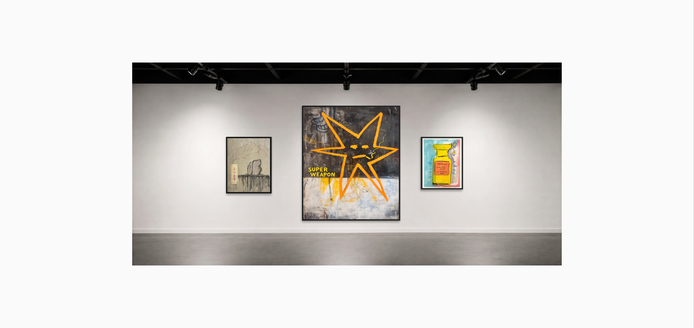
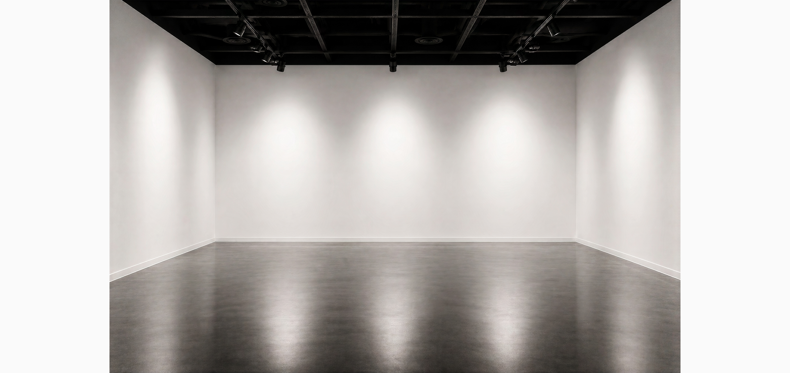
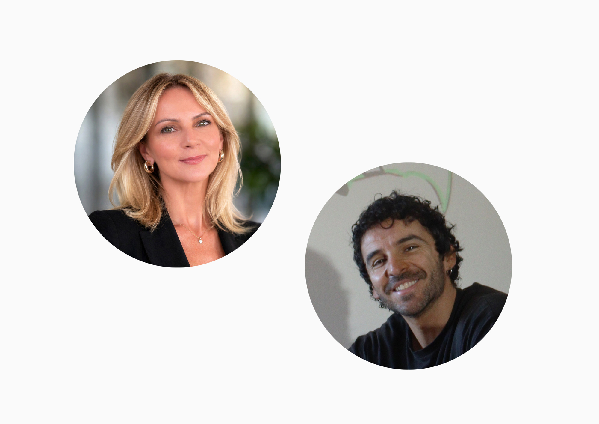
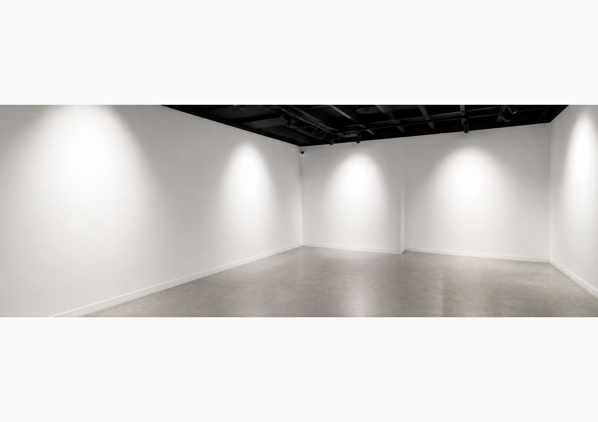
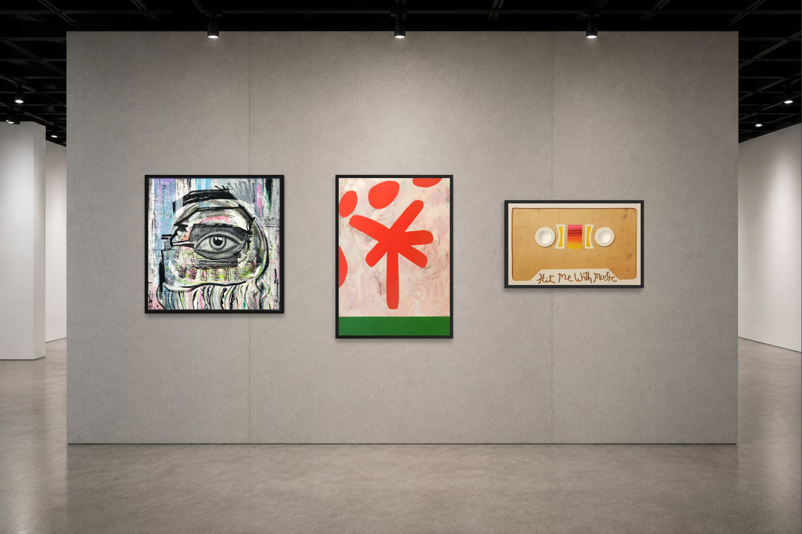

ABOUT KIN
Contemporary art,
without boundaries.
KIN Contemporary is an Australian contemporary art gallery representing distinctive emerging and established artists from Australia and around the world.
Founded by artists and arts professionals, KIN exists to champion exceptional contemporary practice through thoughtful curation, meaningful representation and enduring relationships with collectors.
We believe collecting original art should be personal, accessible and inspiring. By combining curatorial expertise with genuine artist partnerships, we present works that challenge, delight and resonate long after they leave the gallery.
Whether discovering an emerging voice or acquiring a significant work, we aim to create an experience that is considered, transparent and deeply connected to the artists we represent.

OUR STORY
Built on collaboration, integrity and a shared belief in artists.
KIN Contemporary was founded by Kelly Malkin and Federico Boni through a shared belief that artists deserve thoughtful representation and that contemporary art should be experienced beyond the traditional gallery model.
Drawing on complementary backgrounds in the visual arts, creative industries and international contemporary practice, they established KIN to create a gallery built on collaboration, integrity and long-term relationships—one that places artists at its centre while creating meaningful opportunities for collectors to discover exceptional work.

CO-FOUNDER & DIRECTOR
Kelly Malkin
Kelly Malkin is an arts and cultural professional with more than two decades of experience across contemporary art, galleries, strategic partnerships, cultural events, creative production and audience development.
Holding a Bachelor of Arts (Honours) in Film, Video and Photographic Arts, Kelly combines a strong curatorial eye with extensive experience developing partnerships, leading cultural initiatives and connecting artists with new audiences.
Throughout her career she has worked across leading arts organisations, cultivating relationships between artists, collectors, institutions and communities. Her approach is guided by the belief that great representation extends beyond sales—it is built through trust, thoughtful communication and long-term support for an artist's practice.
At KIN Contemporary, Kelly leads gallery strategy, artist representation, partnerships, marketing and collector engagement.


CO-FOUNDER & CREATIVE DIRECTOR
Federico Boni
Federico Boni is an Italian multidisciplinary artist whose practice spans contemporary art, design and visual storytelling.
As a practising artist, Federico brings an authentic understanding of the creative process and the realities of building a sustainable artistic career. His perspective informs KIN Contemporary's collaborative approach to representation, ensuring artists remain central to every decision.
His international background and multidisciplinary practice contribute to the gallery's distinctive visual identity and curatorial direction, while his passion for contemporary culture helps shape exhibitions that feel both refined and accessible.
At KIN Contemporary, Federico leads creative direction, exhibition design, visual identity and artist development.

OUR PHILOSOPHY
Genuine.
Collaborative.
Enduring.
Together, Kelly and Federico founded KIN Contemporary with a simple belief: artists deserve representation that is genuine, collaborative and enduring.
By combining curatorial expertise with an artist-led perspective, KIN Contemporary creates meaningful connections between artists and collectors, building collections that celebrate originality, craftsmanship and the transformative power of contemporary art.

COLLECTING WITH KIN
Discover art that stays with you.
Whether you are acquiring your first artwork or developing an established collection, KIN offers a personal and informed approach to collecting.
We provide additional imagery, artwork details, certificates of authenticity, shipping information and direct guidance whenever required.
Explore Available WorksARTIST SUBMISSIONS
Introduce your practice.
KIN Contemporary welcomes introductions from emerging and established artists whose work connects with our curatorial direction.
Artists interested in representation, exhibitions or future collaborations are invited to send a short introduction together with a selection of recent work, an artist biography, statement and relevant portfolio links.
Contact KIN